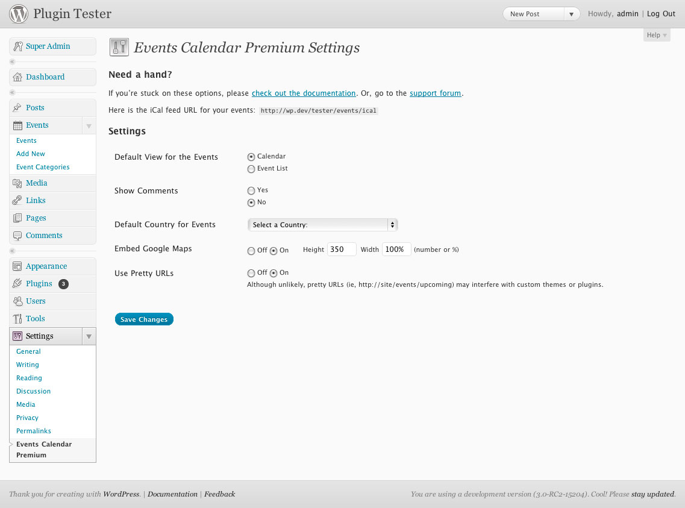

Welcome and thanks for picking up the premium license for the plugin! The Events Calendar Premium plugin enables you to rapidly create and manage events using the post editor. Features include Google Maps integration as well as default templates such as a calendar grid and event list for streamlined one click installation.
Please take the time to read through the instructions listed here, as many support related questions can be answered simply by re-reading these instructions.
This plugin requires at least Wordpress 3.0 and PHP 5.2 to run properly.
Time Note: In the case of most standard Wordpress themes, this plugin should be "plug and play" capable. However, some themes will require you to make customizations, and there's a good chance that you'll want to adjust the styling and structure of some things anyways; So please reserve a little extra time in accordance with your goals for this plugin!
Code Note: This is a premium WP plugin, so the code involved is naturally going to be pretty involved and you should only make edits if you are confident with the material.
Updates Note: We fully intend to continue working on this theme for at least a few more versions until I'm satisfied that I've provided as many cool features as necessary. Keep an eye out on the product page for updates as we'll announce it there when they become available.
Support: Spot a bug? Can't find something? If you've gone through this document and still can't find what you are looking for, please check out the included Support Guide. Keep in mind that I get LOTS of emails regarding my work at ThemeForest, so it might take me a bit to get back to you, but I'll do my best to respond in a timely manner for the first several months of this theme's lifespan (read: I can't promise that I'll be supporting this theme in a decade).
1. Pre-Installation
2. Installation
3. Using the Plugin
4. Documentation
5. Change Log
1. Pre Installation and Setup Steps
Put on your Wordpress hats... we're about to start the installation. First things first. You need a working verion of Wordpress 3.0 and your server will need to be running PHP 5.2 or greater.
Wordpress is free, so that part should be easy enough. If you aren't sure about what version of PHP you are running, contact your webhost and they should be happy to provide you with the information and tools to upgrade to 5.1+ if you need to. This plugin won't even install if you are running anything lower than PHP 5.1, so be sure to check into this before moving any further.
We'll be making lots of references to the Worpdress admin panel in this documentation. If you're totally new to Wordpress, take a few minutes to familiarize yourself with how the admin panel is laid out so you won't be lost when I instruct you to open up "Appearance > Widgets" or something like that. :)
1. Pre-Installation
2. Installation
3. Using the Plugin
4. Documentation
5. Change Log
2. Installing the Plugin
You can use the ZIP upload method, which is detailed in the screencast below:
You'll also need to update your Permalink settings to ensure that the event specific rewrite rules take effects. Here's a screencast that explains how to update your permalinks and add the "Events" link to the main menu:
You can also use the manual upload method, detailed below:
1. Unzip the `events-calendar-premium.zip` file.
1. Pre-Installation
2. Installation
3. Using the Plugin
4. Documentation
5. Change Log
3. Using the Plugin
When installed, this plugin will add a handful of new tools to your theme's admin panel. Let's take a look at a few of them:
The Events List
The Events List is located on the left side of the admin panel (see the new "Events" link?) and consists of a custom list of "events" posts. Use it just like you would a normal post list. Edit/Add/Delete your events from here.
The Events Post Editor
This is accessed by clicking "Add New" from the Event List or the "Events > Add New" button in the left side of the admin panel. Use this like you would any post editor, but note the new fields down below the main text field:
The Event Calendar Premium Settings Page
Located as a new link under "Settings", this page allows you to make some changes to the top level plugin settings:

Adding an "Events" link to Your Menu
To add a new link to your navigation menu called "Events", open up the "Appearance > Menus" page in the admin panel. Then just enter in a new "Custom URL" to the menu - the URL should be something like this if you've updated your Permalinks properly:
http://yourwebsite.com/events
You can also get a little fancier by filtering for specific dates, categories, etc. with something like this:
http://yourwebsite.com/events/upcoming
We'll discuss all of the custom URL options in the next section.
1. Pre-Installation
2. Installation
3. Using the Plugin
4. Documentation
5. Change Log
4. Documentation
Default vs. Custom Templates
The Events Calendar plugin comes with default templates for the list view, grid view and single post view, tailored to the 2010 default theme. If you would like to alter them, create a new folder called "events" in your template directory and copy over the following files from within the plugin folder (from the plugin's views/ directory):
gridview.php
list.php
single.php
events-list-load-widget-display.php
events.css ( original in the plugin's resources/ directory )
Edit the new files to your hearts content. Please do not edit the one's in the plugin folder as that will cause conflicts when you update the plugin to the latest release.
Making it work with your theme
We've built this plugin to the highest standards possible, but there's always the chance that it won't look quite right when installed with a particular theme. You'll notice that all of the demos use the "Twenty Ten" theme - we've done this because it's the standard that all Wordpress 3.0 themes should follow. For themes that don't follow this format or include layout features that might conflict with the plugin, you may have to do a little customizing of the main template files to make it play well with your theme. We can't walk you through how to install this theme with every theme out there (there are tens of thousands), but we'll remind you that the basic HTML for the plugin just needs to fit within the same format that the standard "page.php" file of your theme follows. Some themes utilize a "Full Width" template, which is an even better template to work from since the Calendar Grid view usually doesn't have a sidebar. Just remember the main template files and keep a backup of the originals before you do any work:
gridview.php
list.php
single.php
events-list-load-widget-display.php
Skinning
Editting the resources/events.css file will allow you to effectively re-skin the default theme. Most skin changes can be made with basic CSS knowledge, the Firebug plugin for your browser, and a little perserverence. Make a copy of the original CSS file before making your own changes, just to be safe.
Supported Variables and URLs
This plugin registers the following rewrite rules, which controls which posts are available in the loop. The number of posts returned defaults to 10, but is configurable by the $count parameter to sp_get_events(). Template Tags
**sp_get_start_date( $id, $showtime, $dateFormat)**
1. Pre-Installation
2. Installation
3. Using the Plugin
4. Documentation
5. Change Log
5. Change Log
Version 1.2
Features
* Full events category support! You can now browse by category in both list and calendar views. (If you have a custom template, inspect the differences in ours, because yours won't work with categories out of the box.)
* Customizable /events/ URL slug. In case you want something like http://yoursite.com/concerts
* Translation of URLs enabled through POT file
* Add to Google Calendar button on a single event
Bugfixes
* Restored proper date ordering in admin area
* Translations (where available) should be displaying consistently
* US states now display properly
* Autosave and Preview re-enabled
* No limits to how many events display on a given day
Version 1.1.3
Bugfixes
# fixed the single post / list view bug.
# Removed debug mode because of bugs.
Version 1.1.2
Bugfixes
* translations load correctly
* viewing events in admin now paginates properly
Version 1.1.1
Bugfixes
* proper version #
* consistent labels for plugin: Events Calendar Pro
Version 1.1
* Events Calendar widget
* Single event ical import. Uses **sp_get_single_ical_link()** (must be used in the loop)
Bugfixes
* **is_home()** no longer returns true on an Events view
* Debug mode introduced for users seeing wrong counts in the Events admin view. Turn on and ensure that start and end dates are set correctly before turning off. While debug mode is on, Events will not be sorted by start date properly.
* Some instances where the single.php template in your theme's events/ directory would not load properly should now be fixed.
Version 1.0
* Full port of The Events Calendar 1.6 to Events Calendar Premium 1.0
1. Pre-Installation
2. Installation
3. Using the Plugin
4. Documentation
5. Change Log